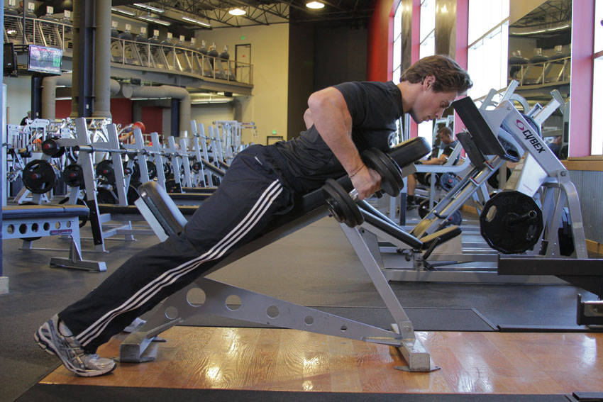

- Using a neutral grip, lean into an incline bench.
- Take a dumbbell in each hand with a neutral grip, beginning with the arms straight. This will be your starting position.
- Retract the shoulder blades and flex the elbows to row the dumbbells to your side.
- Pause at the top of the motion, and then return to the starting position.